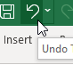
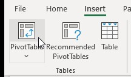
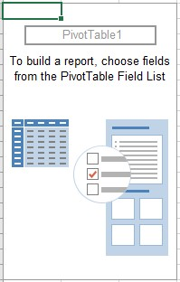
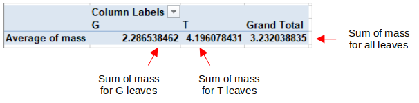

Spreadsheets: the Swiss Army Knives of scientific computing
Excel is the spreadsheet program produced by Microsoft. Spreadsheets are extremely versatile tools for managing, graphing, and analyzing data. Nearly anything you would want to do with data can be done with a spreadsheet. Spreadsheets are also relatively easy to use, compared to other options available.
However, the versatility of spreadsheets comes at a cost - spreadsheets are able to do a little of everything, but they aren't the best at anything (have you ever tried to open a can with a Swiss Army knife? Brutal). More specialized tools exist that can do each of the things that Excel does better than Excel. For example:
- Database management - Excel is often used by biologists to manage data, but database management programs (such as Microsoft's Access) can store larger data sets more efficiently, and better protects against errors that can lead to data loss or corruption
- Graphing - biologists often use Excel to make graphs, but there are dedicated graphing programs (like SigmaPlot) that can produce a larger range of graphs, and can handle plotting of grouped data better than Excel does
- Statistical analysis - some biologists do all of their statistical analysis in Excel, but there are better statistical analysis programs (such as MINITAB, Jamovi, and R) that are faster, support specialized types of analysis, and encourage better practices (such as testing of statistical assumptions)
- Numerical analysis - Excel can do numerical analysis, in which approximate solutions are estimated for problems that lack exact analytical solutions, but there are programs (such as MatLab and Octave) that are faster and more efficient than Excel for these problems
- Simulation modeling - we will use Excel to write a simulation model of genetic drift, but there are programming languages (like C++ and Python) that would run much faster
But, none of these specialized tools can do all of these functions as simply as Excel. Because of its versatility, no matter what you do when you leave CSUSM, if your career is at all related to the biological sciences you will almost certainly encounter Excel on the job, and it is worth your while to learn to use it.
In this class we will use the version of Excel available in the CSUSM computer labs, and on CougarApps, which is Excel 365 for Windows. Everything we learn to do will run in older and (presumably) newer versions, and on Excel for the Mac, but the exact layout of the interface may be different - you can use other versions if you like, but be prepared to do some translating of the instructions for the platform you're running.
Basic anatomy of a worksheet
The screen shot below shows part of a blank Excel worksheet - if you hover your mouse over the image a tooltip will pop up to identify what it is over.
In a spreadsheet program like Excel, data is entered into a worksheet, that is made up of a grid of cells organized in rows and columns. You can refer to a cell in the worksheet by its row and column index - columns are indexed by letters at the top of each column, and rows are indexed by numbers to the left of each row. Cell A1 is selected in this screen shot.
The formula bar is the blank area above the columns (in the screen shot it starts above column D, and extends to the right edge of the image). The selected cell contents will appear and can be edited here. As you will see, sometimes what shows in a cell is the result of a calculation, and a selected cell's formula will appear in the formula bar while the cell itself displays the result of the calculation.
Basic anatomy of Excel's interface
Much of Excel's functionality can be accessed through its ribbon interface. This is the name for the grouped sets of buttons along the top of the Excel window. Sets of buttons are grouped by type of operation, with a label below identifying the button group. Buttons are further grouped into named tabs by task - the tabs are File, Home, Insert, Page Layout, and so on. By default when you start Excel the Home tab is selected, and the buttons available in the Home tab are shown here:
If you move your mouse over this picture the button groups that are important to us will pop up a tooltip explaining what they are for as you hover over the picture above. The "clipboard" group has buttons that handle copying and pasting operations, the "font" group has buttons for styling and coloring text, and so on.
If you click on the next named tab, Insert, you'll see a different set of buttons.
Buttons on the insert ribbon handle inserting (among other things) PivotTables and graphs. We'll use graphs later this semester, but today we will focus on PivotTables, which are a powerful tool for summarizing data. To make use of PivotTables, we need to use a particular data organization called "stacked data". We'll learn what that means now.
Data organization
Spreadsheets give you a great deal of flexibility in choosing how to organize your data. One unfortunate consequence of this flexibility is that Excel does not help you select a data organization that is easy to analyze. Although any number of ways of entering data are possible they are not equally good, and choosing a good data organization makes the rest of your work much easier.
|
For example, we will (shortly) be working with some measurements made on leaves picked from a tree, and from leaves picked up off of the ground. The example to the right shows six measurements of masses of leaves in each group, and color is used to indicate whether they are taken directly from the tree or from the ground. Hopefully it is obvious that this example is a particularly bad choice for a data organization scheme (in fact, it is probably an overstatement to call it an "organization" scheme at all). The color coding makes it possible to see which numbers are from which group, but trying to do any sort of analysis on these data would be difficult at best. Hopefully it is clear that this isn't meant to be a realistic option for data entry - it just shows you that Excel's versatility allows you do whatever you want, even if what you want is a terrible idea. |
|
We can improve on the chaos of the first approach by grouping the data together into blocks, grouped by the source of the leaves, and ditch the color coding. We can then label the two different sets of data in a nearby cell to make it clear what each block of data represents. Real scientists use this sort of approach, I've seen it in the wild. This looks a little bit better - it's certainly less chaotic - but think about why it looks better. First, having the data values belonging to each group entered together in a contiguous block makes it easier to see the values all at once, and to compare them. Comparison is a fundamental operation in the sciences, and having data organized in a way that comparisons between groups can be easily made is always a good thing. If you wanted to take an average of each group it wouldn't be difficult. We will learn more about spreadsheet formulas in a couple of weeks, but for now it's enough to know that when we calculate something in Excel we need to refer to the cells that hold the data, and having them all together in a block makes that easy to do. But, you may be surprised to find out that this is only slightly better than the chaos method when it comes to managing and analyzing data. The disadvantage of this method is that it doesn't make good
use of the rows and columns to help us organize the data. As you
learned in biostats, scientists collect data by defining variables
as measurements of specific properties of some component of a
system we're studying. We also need to replicate our
measurements, which means that we use more than one experimental
subject (i.e. the individual we are measuring),
and measure the variables we are using on each subject. When we
have data from a variable that we want to enter into a
worksheet, we can make use of the rows and columns to help us
keep track of what variable the data represents, and what
individual subject the data pertains to. |
|
A better alternative to entering the data in blocks is to use an unstacked organization, shown to the right. In this organization a column is used to hold all of the data from leaves on the ground, and another is used for all of the data from leaves on the tree. You can see that the columns are labeled, and the labels identify two different groups - the first group is the leaves on the ground, the second is leaves picked from the tree. The column labels also indicate that these are mass measurements. This is one of the two common organizations used for statistical data analysis - you might recognize it from biostats, because it was one of the two data organization types that were supported by MINITAB or Jamovi. It isn't the one that I recommend, though, unless you're forced to use it (a few functions in MINITAB require it, for example). The primary problem with unstacked data is that while it uses columns to indicate the group leaves belong to, the rows don't carry any meaning. For example, the first row of data (in row 2 of the worksheet) has a 0.4 for the mass of the first leaf from the ground, and 4 for the first leaf from a tree, but there is no reason for these two measurements to be sitting next to each other, they just happen to be the first number entered for each group - we could rearrange the numbers in column A while leaving the values in column B alone, and it wouldn't matter. Consequently, the fact that these two leaves are in the same row tells us nothing useful. Worse, it seems like it might tell us something useful - if they're in the same row we might think that they're paired in some way - and we can't tell by just looking at the data if changing the order in one set of measurements and not the other would be a problem. This may not seem like a problem if you're working with your own data and have a reasonably good memory, but if you're working with other people's data it can be a problem. Another limitation of this approach is that it doesn't extend well to additional variables - we may have multiple pieces of information that we want to record about each leaf, and if we have data on the mass of each leaf, the thickness of the leaf, the maximum width of the leaf, and so on, there's no simple way to add these additional pieces of information that makes it clear which measurements are from the same leaf. |
|
The best, most flexible organization (and thus the one I recommend) is stacked data. You can see an example of stacked data to the right - now each column is a different variable (with mass in column A, and the leaf type, which is either tree or ground, in column G), and each row is a single leaf. Both the row and column carries information now - the row identifies which leaf the measurement is from, and the column identifies the measurement's variable. This organization also encourages thinking in terms of variables - rather than thinking of ground and tree as two different groups to compare, this approach encourages you to think of the location of the leaf as the categorical variable "type", with levels T (picked from the tree) and G (taken from the ground). Statistical analysis is based on measuring the relationships between variables, and this type of organization helps you think in those terms. One of the huge advantages of stacked data is that it makes analysis of data much easier, in Excel as well as in other programs. For example, when data sets are organized this way it's possible to take advantage of Excel's data analysis features like sorting, filtering, and (most importantly) PivotTables. |
The take-home message is this: Excel's versatility is a great advantage, but it also enables bad habits. You collect data so that you can analyze it, eventually if not immediately, and it is best to pick a data organization that makes analysis easy. I recommend using stacked data so that the analysis steps will be as easy as possible.
Exercise - entering data, extracting data, re-arranging data, summarizing data in Excel.
Before you get started, create a folder called "biol365" at the root of your OneDrive folder. Within that folder, create a folder called "ex1". It's very important that you set this up correctly to make sure the instructions for these exercises work for you. By using OneDrive your files will be automatically backed up, and will be available for you to use from any computer on campus, or even from home whether you use CougarApps or a locally-installed version of Excel.
Download this file, called "leaf_data.xlsx", to your OneDrive (in folder biol365/ex1). The file contains measurements of several variables from 103 sycamore leaves that were either collected from the ground, or picked live from a tree.
If you open the file in Excel, you'll see that it is organized as stacked data. Each row is a single leaf, and each column is a variable. The names of the variables are mass, petiole.diam (diameter of the petiole in mm - the petiole is the small stem that attaches the leaf to the branch), max.vein.len (length of the longest vein in mm), num.veins (a count of the number of veins in the leaf), leaf.thick (thickess of the leaf in mm), max.width (width of the leaf at its widest point, in mm), and type (T for leaves picked from the tree, and G for leaves collected from the ground).
As you work through the exercise, bear in mind that undo is your friend! The left-curved arrow,, at the upper left corner of the window is the "undo" button (the right-curved arrow is the "redo" button). If you make a mistake (such as deleting something you didn't mean to, or sorting something incorrectly) you can click the undo button and most of the time you can reverse your mistake. Clicking the button will undo the most recent operation, and clicking repeatedly will undo in the order that you executed the operations. Clicking and dropping down the undo list allows you to select a particular operation to undo, out of order.
A. Filtering and extracting data
We are going to start today by learning some of Excel's features that help you enter and manipulate data. We'll start with filtering.
1. Turn on auto-filtering. Select one of the headings (any one, like "mass" in cell A1), and click and hold "Sort & Filter" on the right side of the button bar - when the menu drops down select "Filter" (like this). You'll see that activating filtering puts a drop-down menu button on each of the column headings in the data set. As long as all the data are contiguous (meaning, no blank rows or columns) Excel will find all the variables and turn filtering on for all of them.
2. Filter the leaves picked from the tree. Click on the down-arrow on the "type" variable (in cell G1) - you'll see that all the unique values in this column are identified (which are all either T or G), with a check box next to each of them. Un-check the box next to G, so that only T is selected, and click "OK". You'll see that only the T leaves are showing. To help you remember that you're filtering the data, the icon in the drop-down menu box has changed to show a filter icon, and the row numbers have turned blue and are no longer sequential numbers - they still represent the row numbers from the entire data set, but the rows with G leaves are hidden.
This is just a temporary change in how the data are displayed, and everything will be back to normal when you turn filtering off. If you want to extract the data for T into a new data set, you can select all the cells, copy, and paste to a new worksheet. To do this, you will need to:
- Select all the cells including the column names (see below if you don't know what I mean by this), right-click in the selected cells (that is, click the right mouse button), and select "Copy".
- Make a new worksheet by clicking on the + next to the "Sheet1" tab at the bottom of the worksheet - it will be called Sheet2.
- Select the upper-left cell of Sheet2 you want to paste to (A1), right-click and select "Paste". You now have the leaves from the trees permanently duplicated into a sheet by themselves.
Selecting cells vs. editing cells
This is a good time to double-check that you know what it means to "select" a cell in Excel. Selecting a cell is done by clicking once, with the left mouse button. A selected cell looks like this:
A selected cell has a thick line around it, with a small square in the lower right called the "fill handle" (which we will make use of shortly), but the "cursor" (i.e. the vertical line that shows where anything you type on the keyboard will appear) is not there.
Sometimes the mouse you use only has one button, and if so it acts like a left button on a two-button scroll wheel mouse like the ones we have in the computer labs. Left-clicking is much more common an operation than right-clicking, so if the instructions only say "click" assume they mean "left click".
If you double-click on a cell, it changes its appearance to this:
Hopefully you can see that double-clicking changes the appearance of the cell, and adds a cursor (the thin, blinking vertical line on the left of the cell) - this indicates that the cell is activated for editing.
You don't need to double-click an empty cell to enter data into it, you can just select it and start typing. However, if a cell already contains something that you want to change you need to double-click to edit its contents - if you don't switch to editing mode before you start typing you will replace what is already in the cell with whatever you type in.
If you meant to select a cell but accidentally enter editing mode instead, you can get out of it by hitting the ENTER key if you haven't made any changes yet, or by hitting the "ESC" key or by clicking on the red X next to the formula bar, , if you accidentally made a change and don't want it saved in the cell (it doesn't turn red until you hover over it). If you've already hit ENTER you can use undo instead.
To select more than one cell you can left click to select a single cell, hold down your mouse button, and drag to select multiple cells. This works best if you select one corner of the range you want, click/hold/drag to the other corner and release - this will shade the selected cells gray, and put a border around them. Alternatively, you can select the cell in one corner of the range, move to the other corner with your mouse wheel or by clicking in the sliders on the left and bottom of the worksheet window, and then hold down the SHIFT key while clicking on the other corner cell - this will select everything between the first and second selected cells.
Context and pointer types
Excel has a huge set of features, and to avoid being overwhelming it tries to only present things to you that it thinks you need at the moment. That is, the tools that Excel presents to you depends on the context. We will see this frequently throughout the semester - you will see different options when you right-click on a cell in your worksheet than when you right-click in a graph (the menu that pops up is even called a "context menu"), and the tabs in the ribbon interface will change when you select a cell, a PivotTable, or a graph.
The other thing that depends on context is the pointer type. When you are moving your mouse around over the ribbon, or anywhere outside of the worksheet cells, the pointer will look like this: - this pointer is used to select menu items, or to click on buttons in the ribbon.
When you move your pointer over the cells in the worksheet, it changes to this: - this pointer is used to select a cell (with a single click) or activate it for editing (with a double-click).
If you hover over the thick line around a highlighted cell (anywhere but the fill handle) the pointer changes to this: - this pointer can be used to move a cell to another position in the worksheet. If you click, hold, and drag with the left mouse button on the edge of a cell or a range of cells when this pointer type the selected cells will be moved to the location where you release the button.
Last for now, if you hover over the little black square in the lower right corner of the cell (the fill handle) the pointer looks like this: - with this pointer, if you click/hold/drag the fill handle you can either duplicate the contents into the cells you drag over, or you create a series into the cells you drag over, depending on the cell's contents.
3. Filtering by numeric values. Switch back to the full data set in Sheet 1.
We can filter numeric variables based on their values - for example, if we wanted to look at the leaves with large petiole diameters we can filter the petiole diameter column so that only leaves with petiole diameters bigger than 3 are shown. If you drop down the filter menu for petiole diameter, you'll see that you get the same type of list of unique numbers that you got for the type column, sorted in numeric order. You could un-select any that are less than 3, but as the data set gets large and the number of different values increases this approach becomes impractical.
A better way is to select "Number filters" → "Greater than or equal to", and enter 3 for the value. Since the leaf type filter is still in place, you are now seeing the T leaves with petiole diameters greater than or equal to 3.
Copy the data, make a new sheet (Sheet3), and paste the data there.
Switch back to Sheet1, make sure you have only a single cell selected (anywhere in the worksheet is fine) and turn off filtering by selecting "Sort & Filter" and clicking on "Filter" again - this is a toggle, meaning that selecting it when it's off turns filtering on, and selecting when it's on turns filtering off. With filtering turned off all the data are displayed, in the original order.
B. Proper use of the "fill handle" and the "fill" menu.
Now we are going to sequentially number the leaves in each group, which will help us when we re-organize the data in the next step.
4. Prepare yourself to sort by type. We want to sort by leaf type so that we can easily number the leaves within each group. But before we do this you should know that...
SORTING A SPREADSHEET IS DANGEROUS
Another problem with Excel's flexibility in data entry is that you have the ability to make big, costly mistakes with little or no effort.
One of the quickest ways to irretrievably screw up your entire data set in Excel is to sort it incorrectly. For example, rows represent measurements from a single leaf, and if you sorted the leaf thicknesses without sorting the rest of the columns the thicknesses would no longer be associated with the correct leaf, you would scramble the data. If you didn't realize you did this, saved your work, and closed Excel, all "undo" information is lost and you would be unable to recover the original sort order. Worse yet, mistakes like this can be very difficult to detect - it doesn't change the data values, just the relationships between the variables - so you may never realize your data are all wrong.
Excel knows this is a danger, and tries to help you - if you select part of a contiguous set of data and try to sort it, Excel will pop up a warning and ask if you want to extend the selection to include all of the contiguous data. You can take advantage of this to speed up your work - if you select just a single cell in a contiguous block, Excel assumes you want to sort the entire contiguous data set and will select it for you. But, if there is a blank column in the middle of a data set it does not assume that the columns to the right of the blank are meant to be sorted with the columns to the left of the blank, and it will not extend the sort to include them, or even warn you of danger.
So, to avoid problems, make sure your data are contiguous - no blank columns unless you want the different data sets to be treated as unconnected for some reason. The data we are working with is contiguous, so we won't have a problem with the leaves data, but you've been warned!
The other sort problem we have to be careful about is that unless we have a column that indicates the original sort order we won't be able to get back to the original order after we save and quit. Sometimes the original order of the data is important - the data may have been collected over time, for example, and it may be important to know the order that the data were observed. We will start by adding an "original order" column that shows how the data were sorted when we opened the worksheet - no matter how we sort the data, we can always get it back to the original sort order by sorting on this column.
5. Make an "original order" column for safety, using the fill handle. Enter "Original order" in column H1 (note that I used periods to separate the words in the other columns, because the data were meant to be imported for analysis into a program called R that punishes you for having spaces in names - Excel does not punish you, so we can use a space in the Original order column name).
In cell H2 enter a 1. After you hit ENTER you will be in cell H3, so select H2 again.
We're going to use the fill handle to make our number sequence, - the fill handle is a little confusing to use, because it does different things in different contexts. If you left-click, hold, and drag the handle down it acts as a copy/paste (go ahead and try this - fill down a few cells and you'll see you have 1's in each cell you filled into).
If you change the entry in H2 to "Leaf 1" (without the quotes) and then use the fill handle to extend it to the cells below you'll get the sequency Leaf 1, Leaf 2, Leaf 3, etc. - Excel assumes that mixes of letters and numbers are meant to be unique labels, and it increases the number by one for each cell you extend the sequence into.
Now, change the number in H2 back to 1, and enter a 2 in H3, and delete any Leaf X labels left from the previous step. Select both cells H2 and H3,. If you now double-click on the fill handle you will see that you now have sequential numbers from 1 to 103 in column H, indicating the current (original) sort order. Excel interpreted the two cells you selected as the start of a numerical sequence and it extended the sequence to the last row of data in the adjacent column G.
6. Sort by leaf type. To sort by type, select cell G1, drop down "Sort & Filter", and select "Sort A to Z" (that is, alphabetically, or in increasing numeric order). If you watch as this happens, you'll see that Excel very quickly expands the selection to the entire data set, and sorts the entire data set by leaf type - the rows are all intact, they are just ordered by type.
7. Enter sequential leaf numbers within each type, using "fill series". Enter the column heading "leaf.number" into cell I1.
We could use the same trick as we used before, but sometimes it's inconvenient to use the fill handle (if there are thousands of rows, for example). In this case we want to be able to number the leaves sequentially for each group from 1 to n, where n is the number of leaves in a group. We can create sequential numbering for a whole set of selected rows, which will work better for this task.
Enter a 1 in cell I2, and then select all the cells from I2 to I53 (which are the rows that have G leaves - that's a capital i in I53, not a 1).
Next, select "Fill" → "Series" from the ribbon - it's just to the left of Sort&Filter and it's labeled "Fill" if you have Excel at full screen. If not, it will look like this: .
In the window that pops up, the default settings of a "Linear" type, with a "Step value" of 1 will give us sequential numbers, so click "OK".
Repeat this for T leaves (enter a 1 in cell I54, and fill the series to the last row).
8. Sort the columns from left to right alphabetically. We don't really need to do this, but just so you know how...
- Click into a cell in the data set (anywhere with data in it), and then click on "Sort & Filter" → "Custom sort". In the dialog that pops up, you'll see that you can select a "Sort by" column, and then can "Sort On" either the data values in the cells (the default), or by formatting information. Excel's default assumption is that you want to sort rows, so these options are all selected to allow you to pick column labels. We don't want to sort rows this time, so ignore all these settings for the moment.
- Click on "Options" and select "Sort left to right", and then "OK".
- Now, back in the Sort settings everything is set up for sorting columns based on the values in one or more row. To sort the columns alphabetically by column label:
- Select "Row 1" for the "Sort by" selection, and leave the rest at default values.
- Click "OK".
You'll see that the columns are in alphabetical order.
C. Using Pivot Tables to summarize your data.
Excel's PivotTable is a tool for summarizing stacked data sets. Once you learn how they work, you'll see that PivotTables are an easy, convenient way to summarize complex data sets.
9. Construct a Pivot Table. We will use Pivot Tables today to calculate the sample size, average, and standard deviation of mass for each leaf type.
a. Make sure you're in Sheet1, and select any cell in the block of data, activate the "Insert" tab, and click on PivotTable ( like this).
b. You will see the Create PivotTable dialog pop up, and you will see that it has successfully found your data and identified it in "Table/Range:". The format of this entry is Sheet1!$A$1:$I$104. This is saying that the data are in Sheet 1, with the upper left cell found in cell A1, and the lower right cell found in I104. We will learn about the meaning of the dollar signs later this semester, but for now ignore them - they don't change the fact that the cell references are A1 and I104. If you look at the data still visible behind the Create Pivot Table window, there is a dotted line around the data that indicates what the Pivot Table will be using.
Having found the data you wish to summarize, you now need to decide where to put the summary table - by default Excel elects to create a new worksheet, which is what you want here. Select "OK" to create the table.
c. Now you can construct the
table. You should be looking at a new worksheet (Sheet4), with a blank template
for your table to the left, a list of the column names in your data
range to the upper right (called "fields"), and a set of possible places to place the variables
in the table in the lower right.
(called "fields"), and a set of possible places to place the variables
in the table in the lower right.
The simplest way to construct the table is to drag the names of the variables you wish to use from the Field List into the blank template - in computer science a "field" is a column in a table, so the PivotTable Fields list is a listing of all the columns in your data set. The variable "type" is your grouping variable, so drag it from the field list and drop it into the "Columns" box below the field list. You will see that the two leaf types present in the data are now showing as column labels (T and G).
You wish to calculate mean and standard deviation of mass, so select "mass" and drag it to the "Values" box, just below the "Columns" box you just used. You will now have summarized data, and by default Excel picks a sum as the statistic to report for numeric data. It looks like this:

The layout is fine, but the statistic is wrong, so double-click on "Sum of mass" in the table and change "Sum" to "Average". It will now look like this:
You'll see a funny quirk of Excel pivot tables at this point - the statistic for the overall data is still labeled "Grand Total", even though it is no longer a total. I'm not sure why Excel does this, but it has survived multiple updates to the software, so it seems we're stuck with it. Just recognize that the statistic in the margins of the table is the same as in the body of the table, no matter what the label says it is.
Now we will add a standard deviation. Drag "mass" from the list of fields into the Values box for a second time. You will see that Sum of mass is now sitting next to Average of mass beneath each leaf type label. Double-click "Sum of mass" and change "Sum" to "StdDev" (not StdDevp, which is the population standard deviation - you will probably never use this option, as you will always be dealing with samples of data).
When you dropped mass into the value fields box for the second time, you may have noticed that the "Columns" block gained an item called Σ Values. You can drag Σ Values between the columns and rows blocks to change the layout - when it's in the Rows box each statistic is in a different row, and if it's in the Columns box each statistic is in a separate column beneath its corresponding leaf type. With the leaf types acting as column groupings the table is much easier to read if you put the statistics in rows - drag Σ Values into the Rows box.
We'll add a sample size into our table now - drag mass from the fields list into the Σ Values box and change this third mass entry to be a count. We'll do this a little differently this time - if you click on "Sum of mass" in "Σ Values" (the entry for your third mass entry), and select "Value field settings" from the drop-down menu you will be taken to the "Value Field Settings" window again, and there you can change the summary statistic to a count - this gives you your sample size.
At this point, you should have a table with a column called Data that gives average, stdev, and count of mass as labels, a column with G as the type, a column with T as the type, and a column called Grand Total that gives the mean, standard deviation, and sample size for all leaves.
10. Change the arrangement of the table. We would like to swap the row and column labels next - that is, we want the Types to be row labels, and to have a different summary statistic in each column. There are two different ways to do this.
a. Method 1 - you can use Paste Special to transpose the table. Select the table from the upper left to the lower right edges (from cell A3 to cell D7), position your pointer someplace over the selected cells, and right-click. From the menu that pops up select "Copy". Select cell A14, right-click and select "Paste special" → "Paste special" (the second one is at the very bottom of the popup menu). You will get a Paste Special dialog that allows you to do several possible things with the data you selected when you paste it. From the "Paste" area, change from "All" to "Values"; this will just paste the numbers and letters, but will omit formatting and any cell formulas that may mess up the resulting table. Finally, click on "Transpose" (which is in the lower-right of the dialog), which means to swap the rows and columns. Click "OK". You'll see that your table has the same data values as before, but now the types are row labels, and the summary labels are in the columns.
This method works fine, but the pasted cells are no longer a pivot table.
b. Method 2 - you can re-arrange the pivot table structure. Select a cell inside the table to activate the PivotTable editing tools again. Now, in the lower right boxes you can drag "Σ Values" from Rows to Columns, and "type" from Columns to Rows. This should give you the table you want, with types as row labels and summary types as column labels. Note that if you try to do this in reverse order, with type moved first, you end up with a table that is long enough to overlap with your transposed table in A14 to E17, and Excel gives you a warning and asks you to confirm that's what you want to do. Dragging "Σ Values" into the columns first makes the table wider than it will be in the end, which doesn't overwrite anything.
We won't be using the "Filters" option today, but it does what you might expect from our filtering exercise, above - if you were to drop the leaf type variable into the "Filters" area, you could use that to show just one leaf type or the other in the pivot table.
11. Un-stack the data. The reason we sequentially numbered the leaves in Sheet1 was to make it easy to un-stack one of the columns of data into a column for each leaf type using a Pivot Table. Although I want you to use stacked data whenever possible, there are times that you might need the data in an un-stacked arrangement (there are some statistical tests in MINITAB that require un-stacked data, for example).
To un-stack a column, switch back to Sheet1 and insert a new Pivot Table (make a new one instead of changing the one you've already made, we're not done with it yet), and then use leaf.number as the Rows, and type as the Columns. We now just need to put whatever variable we want to un-stack into Values - drag mass into the Values, and you will see a column for G leaves and a column for T leaves of masses. Excel tells you it is using the "Sum of mass", but since each row has a unique leaf number within each leaf type the "sums" under the G and T columns are actually just data values.
Blanks and zeros
Spreadsheets make a distinction between missing values and measured zeros. A measured zero is an actual data value that was observed to be equal to zero. A missing value is a data point with an unknown value (because it was never measured, equipment failed, a computer crashed, or whatever), and since we don't know what number it should be we shouldn't assume it was a zero.
We can see how Excel makes a distinction between the two very easily, because the pivot table is linked to the leaf data set. If we change a data value, we just need to update the pivot table and the calculated values will update as well.
12. Change a data value to zero, and update the pivot table. We will now change a data value in Sheet1 to a 0 and see what it does to the summary statistics in the PivotTable.
- Switch back to the data in Sheet1.
- Sort on the original order to get the data back to its original sort order.
- Change the mass in the first row from 4 to 0 (after sorting from left to right it should be in column C)
- Switch to the pivot table we used to calculate means, standard deviations, and sample sizes for mass. Right-click a cell within the table, and select "Refresh", and as you do so watch how the numbers in the table change. Since you changed one of the tree leaf masses to 0 the average and standard deviation for leaf should change. Sample size doesn't change, however, because the 0 is considered a measured value.
13. Delete a data value and update the pivot table. Now we will see how things change when we delete the data value in Sheet1 instead of setting it to 0.
- Switch back to the data in Sheet1 and delete the 0 you entered (use either backspace or delete - these are not the same in Excel, but either will work here).
- Now, back to the pivot table, and refresh again. Since a data value is missing the average, standard deviation, and the sample size all change. The average should change less than when the value was set to 0, because the 0 mass was an incorrect value that dragged the average down, whereas the blank is a missing value that has no effect on the calculation. The sample size new reflects that the blank is omitted, and should be 50 instead of 51 for the leaves picked from trees.
Assignment
That's all for today - save your spreadsheet and upload it to the class web site.